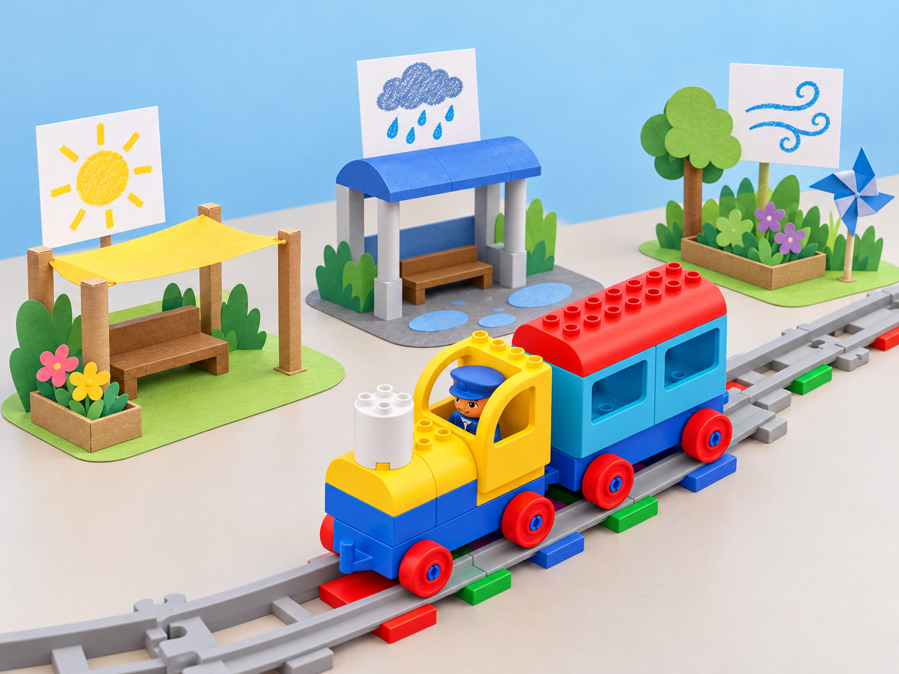
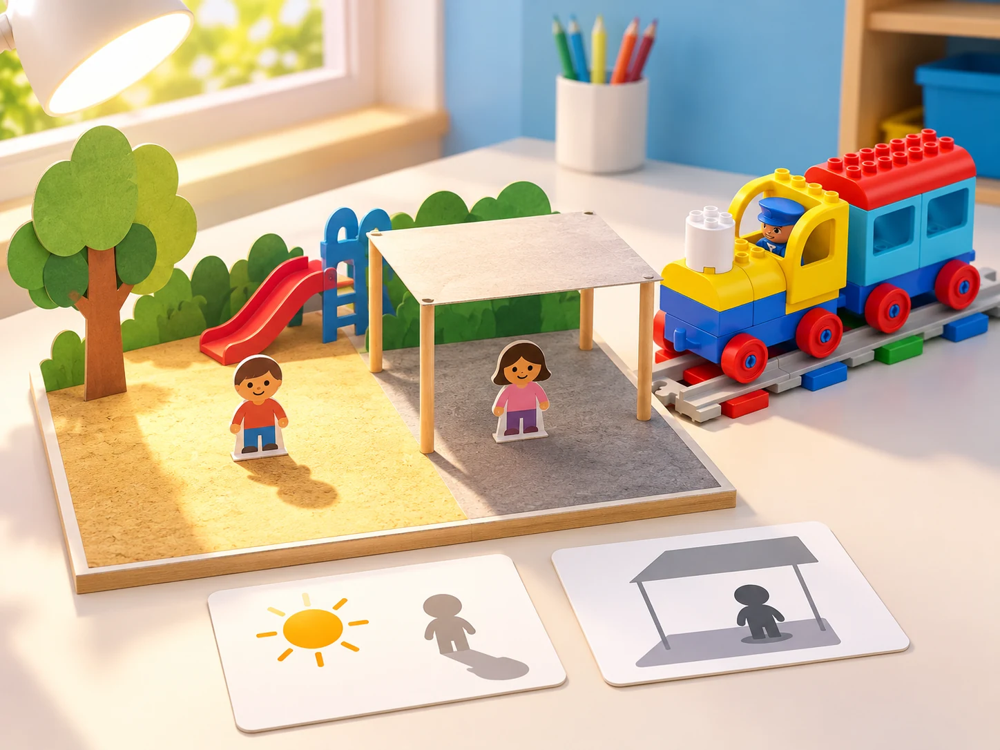

Un pati per a cada oratge
🏷️ Oratge, estacions i espais de joc
🌱 Situació, repte i intenció
🎯 Aprenentatges i vocabulari
- Interpretar targetes i registres d’oratge indicant-ne la data, la font i si són dades reals o simulades.
- Ordenar instruccions perquè una maqueta represente una decisió de disseny per al pati.
- Comparar una predicció amb les dades proporcionades i revisar l’explicació quan no coincideix.
- Distingir un model escolar d’una predicció meteorològica útil per a prendre decisions de seguretat.
🧰 Materials i preparació
Prepareu el tren, les vies i els blocs d’acció Coding Express, cartolina, peces de construcció, pictogrames d’oratge i targetes amb dades. La unitat oficial vincula algunes propostes a STEAM Park; aquesta adaptació permet substituir eixos materials per cartó, paper i elements escolars. Per a les activitats amb dades, useu observacions reals del centre amb data i font, o un conjunt fictici clarament etiquetat com a simulació.
No feu una predicció per a decisions de seguretat: consulteu els avisos oficials amb les persones adultes responsables.
📅 Seqüència didàctica
Quatre estacions · Four Seasons (30–45 min)
Fase 1 · Activem i prediem
Després de llegir un àlbum il·lustrat propi o de lliure ús sobre les estacions, compartiu observacions locals del sol, la temperatura percebuda, la pluja, les plantes i les activitats del pati al llarg de l’any. Predigueu quins complements poden ser útils en cada estació.
Fase 2 · Explorem i construïm
Classifiqueu complements de joguet o targetes (abric, capell, impermeable, cantimplora) per estació i compteu quants n’hi ha de cada categoria.
Fase 3 · Expliquem i registrem
Repartiu les quatre estacions entre grups i construïu al costat de cada parada del tren un model d’una activitat possible al nostre entorn —plantar a la primavera, buscar ombra en estiu o fer una activitat coberta en dies plujosos.
Fase 4 · Apliquem i millorem
Expliqueu quina observació justifica cada model i compareu com podria canviar en una zona del món amb un clima diferent. Reviseu una escena si no queda clar quina estació representa.
Fase 5 · Comprovem i reflexionem
La roda de possibilitats · Probability (30 min)
Fase 1 · Activem i prediem
Comenceu amb una endevinalla de color i compareu què passa quan hi ha pistes amb una tria sense pistes. Abans de cada tirada, cada grup prediu quin color eixirà.
Fase 2 · Explorem i construïm
Creeu una ruleta de paper segura amb espais acolorits (per exemple, tres blaus i un de cada un dels altres tres colors) o una bossa transparent amb la mateixa distribució. Marqueu cada predicció en una taula pictogràfica.
Fase 3 · Expliquem i registrem
Feu girar la ruleta o traieu una fitxa una vegada i registreu el resultat. Després de diverses proves, compteu les marques i compareu freqüències.
Fase 4 · Apliquem i millorem
Expliqueu quin color és més probable en aquest model perquè té més espais, sense assegurar quin serà el resultat següent. En cinc torns, arreplegueu peces de cada color que haja eixit i useu-les per construir una composició comuna. El tren pot visitar una parada per resultat, però no és un pronosticador.
Fase 5 · Comprovem i reflexionem
Preparem un personatge davant d’un avís · Mr. Bear’s Forecast (60–90 min)
Fase 1 · Activem i prediem
Converseu sobre per què ajuda una previsió i per què de vegades no coincideix exactament amb el que observem. L’adult mostra una notícia o avís meteorològic oficial, datat i triat per al context local.
Fase 2 · Explorem i construïm
El grup identifica quin perill general s’hi descriu i quina informació voldria preguntar a una persona experta. Amb una titella o figura de paper, trieu un escenari fictici d’oratge advers.
Fase 3 · Expliquem i registrem
Representeu dues parts: què podria preparar el personatge abans i com seguiria les instruccions oficials de les persones adultes si l’episodi arriba. Registreu la font i la data de l’avís, les preguntes i les decisions del model.
Fase 4 · Apliquem i millorem
Construïu una escena amb peces, cartó o dibuixos i presenteu-la a un altre equip, que pot fer preguntes. Inventeu una eina o objecte que ajudaria el personatge dins del model i reviseu la proposta amb el retorn rebut.
Fase 5 · Comprovem i reflexionem
Què canvia quan arriba el sol? · Playground (30–45 min)
Fase 1 · Activem i prediem
Llegiu un relat breu sobre un pati amb zona d’arena, gespa i ombra. Predigueu quina zona rebrà llum directa i quina pot quedar protegida.
Fase 2 · Explorem i construïm
Amb observació supervisada, compareu una superfície del pati quan rep el sol i una zona semblant quan està a l’ombra. Si no és possible eixir, useu fotografies datades o observacions preparades i identifiqueu-les com a tals. No toqueu superfícies calentes ni compareu sensacions corporals individuals.
Fase 3 · Expliquem i registrem
Registreu què observeu i representeu en una maqueta, amb colors, quines zones reben llum directa i quines queden protegides. Expliqueu quina observació us fa pensar que una zona s’escalfa més.
Fase 4 · Apliquem i millorem
Predigueu com canviaria l’ombra en un altre moment del dia i construïu un segon model per comparar la predicció. El tren serveix per visitar i descriure les zones, no per mesurar-ne la temperatura.

Fase 5 · Comprovem i reflexionem
Ombra per a una figureta · Animal Shelter (30–45 min)
Fase 1 · Activem i prediem
Plantegeu el repte de protegir del sol una figureta d’animal; no s’usen animals reals. Abans de construir, pregunteu com sabrem si hi ha ombra suficient i acordeu un criteri observable: que la figura quede fora del feix de llum directa.
Fase 2 · Explorem i construïm
En grups de dos o tres, esbosseu i munteu un refugi amb peces i materials corrents. Poseu-lo en una zona il·luminada de l’aula o a l’exterior supervisat.
Fase 3 · Expliquem i registrem
Observeu l’ombra i registreu si la figura queda fora de la llum directa. Si el centre disposa d’un termòmetre escolar segur, una persona adulta pot prendre mesures comparables dins i fora del refugi; no és un requisit ni s’infereix la temperatura només mirant el model.
Fase 4 · Apliquem i millorem
Feu un canvi per millorar la protecció i repetiu l’observació. Després, afegiu una nova condició representada amb targetes —vent o pluja— i adapteu el disseny explicant quin compromís apareix.
Fase 5 · Comprovem i reflexionem
🧪 Evidències i avaluació
Recolliu la classificació/recompte de complements i escenes de les estacions; les prediccions i marques de cada prova probabilística; la font, data, preguntes i narració de preparació/resposta d’oratge advers; el mapa sol/ombra del pati; i el prototip de refugi abans/després de provar-lo. Observeu si l’alumnat diferencia dada observada, resultat aleatori, previsió i simulació; comunica què ha aprés amb un model; i introdueix una millora recolzada en un criteri visible.
♿ Participació, accessibilitat i seguretat
Marqueu cada parada amb un pictograma gran i un color d’alt contrast; oferiu una via curta de demostració i peces fàcils d’agafar. Cada infant pot triar targetes, ordenar estacions, moure el tren, dictar una explicació o documentar la prova. Totes les activitats es poden fer amb observacions de calendari i escenaris de paper, sense eixir a l’exterior.
🔗 Referents i adaptació
Adaptació de les cinc lliçons de Weather: Four Seasons, Probability, Mr. Bear’s Forecast, Playground i Animal Shelter. La pàgina resum anuncia quatre lliçons, però el PDF oficial n’enumera cinc; aquesta fitxa cobreix les cinc. S’han creat contextos, targetes, proves i il·lustració originals, i s’han substituït els materials addicionals de STEAM Park per recursos d’aula.